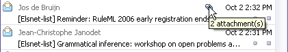
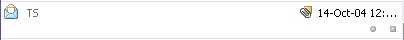
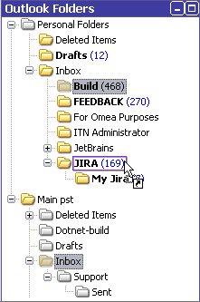
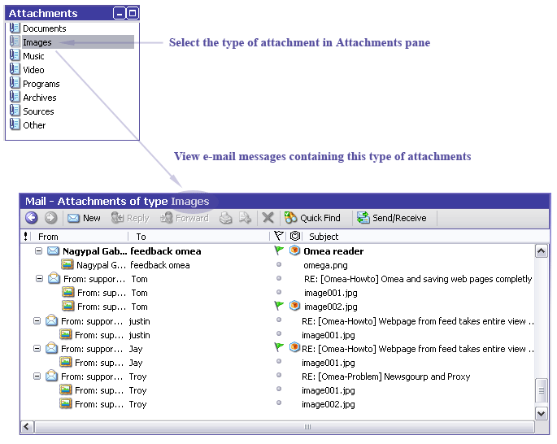

Using Omea Pro for E-mail
Setting E-mail options
To set or alter the MS Outlook e-mail client options you may want to look at Omea’s e-mail options before starting to work with e-mails in Omea.
Omea only processes e-mail messages in the Outlook folders and Outlook Information Stores marked for indexing.
Mail Tab
Message Display is the main window in the Mail tab showing you the e-mail list and Preview pane.
The e-mail list is located at the upper part of the Message display. It has several columns - read/unread status, importance status, From, To, Subject, Date, Attachments, Flags and Annotations. Clicking the column title sorts the messages according to the selected column feature.
The Preview pane occupies the lower part of the Message display. It shows content of the e-mail selected in the e-mail list. Main e-mail fields (Inbox and From), Flag (if any) as well as Outlook folder name where the e-mail is located are shown in the message title.
The top of the Mail tab has a toolbar with the following buttons: Quick Find, main mail management functions ( New, Reply, Reply to All, Forward, Send/Receive, Delete), Print and Create Clipping from Selection.
Mailing in Omea
Omea Pro provides you with all basic e-mail functions using Microsoft Outlook form. You can
- read and access e-mail messages located in different MS Outlook information storages,
- send and receive messages,
- write replies for messages,
- create new messages and message folders,
- print the e-mail messages contents,
- delete messages and message folders,
- copy and move messages and folders among different folders and message storages,
- save the messages as .MSG files
- create Clippings from the e-mail messages content
Reading E-mail
To read e-mails: open the Mail tab and select necessary e-mail. Its content appears in the Preview pane. To open the message in the separate window, either double-click it or right-click and select Open in the popup menu.
Unread messages are marked as Unread: their names in the mail list are written in bold and the closed envelop icon is displayed next to them. Messages you read in Omea or in Outlook are marked as Read: their names in the mail list are written in with normal font and the open envelop icon is displayed next to them.
You can set an option in Omea General options to automatically mark items as read after a specified time interval. This option is enabled by default and the default time interval is 2 seconds.
Turning the AutoPreview option on and off
Now you can enable the AutoPreview option (View>AutoPreview) for viewing your e-mail the way you got used to it in Microsoft Outlook.
You can choose to preview all news posts in the Items List or choose to autopreview the unread messages only (View>AutoPreview>Unread Items) or not to view the e-mail using autopreview.
Marking Messages as Read/Unread
To mark message as Read/Unread:
-
Do one of the following:
- Select a message in the Items List. To select several messages press either Ctrl or Shift on the keyboard.
- Right-click it and in the popup menu select Mark as Read (or press Ctrl+Q) or Mark as Unread depending on the previous message status.
- Click the mail resource icon.
You can mark the whole conversation thread as Read/Unread if you click with Ctrl key pressed.
Creating a New E-mail
To write a new e-mail:
-
Open the Mail tab and do one of the following:
- press the New button on the Items List toolbar.
- select File -> New -> Mail Message in the main menu.
- press Ctrl+N.
- In any other tab press Ctrl-Shift-M
Replying and Forwarding E-mails
To reply/reply to all/forward an e-mail:
- Open the Mail tab and select the message to reply/forward.
- Press Reply/Reply to All/Forward button or right-click the message and select Reply/Reply to All/Forward in the popup menu.
Sending and Receiving E-mail
To send/receive mail: press the Send/Receive button in the Mail tab or select Tools | Send/Receive Mail on the main menu or press F9.
Viewing Mail
Omea provides several ways to view your mail.
Viewing Mail via Views and Categories
You can view e-mails pressing desired folder of the Views and Categories pane. If this pane is not visible, open the Mail tab and click the Views and Categories button on the pane selector bar (left-hand side of the main window). For instance, to see all your tasks, click the All Tasks folder.
Viewing Mail via Outlook Folders
Mail can be viewed as folders corresponding to the folder structure in Outlook mail client. If this pane is not visible, open the Mail tab and click the Views and Categories button on the pane selector bar (left-hand side of the main window).
To be visible in Omea the folder should be selected for indexing in the Options dialog, Outlook Folders options. Non-indexed folders are shown grayed in the pane. For more information about indexing, see Indexing Your Computer’s Resources.
Viewing E-mail Messages as Threads
When you communicate with different people via e-mail messages (reply and forward messages), you are not always able to track the where the conversation started and how it evolved. With Omea Pro's Display Threaded feature it's quite simple. Select the desired e-mail message in the Items List, right-click and then select Display Threaded.
Viewing Mail with Attachments
In Items List for e-mail messages with attachments a clip icon in the Attachments column is shown:

Additionally a tooltip shows the amount of the attachments in the mail. When an Omea resource is received as an attachment clip icon is slightly changed:

Managing Messages in the Outlook Folders Pane
The Outlook Folders pane provides several possibilities to manage your messages: you can move messages among folders and move folders and messages among different information stores.
Moving Messages among Outlook Folders
To move messages among folders:
- Select message(s) to move in the Items List.
- Either drag selection to the necessary folder in the pane or right-click the selection (or press Ctrl + Shift + V), select Move to Folder… item in the context menu, and choose the desired folder in the Move Items dialog.
IMPORTANT! If you move a message to an Outlook folder that is excluded form indexing (appears grayed), you will no longer be able to access it in Omea. To restore access, you would need to use MS Outlook and move the message to a folder that is indexed by Omea.
Working with Different Information Stores
You can have several Outlook information stores which you can synchronize with Omea (see Outlook Information Stores), thus, changes you do with your e-mail and e-mail folders, contacts and tasks in these stores in Omea are automatically synchronized with Microsoft Outlook.
You can copy and move messages and folders among different folders and message storages (which are presented as root-level folders).
Moving Messages between Information Stores
To move a message from one information store to another:
- Select message(s) to move in the Items List.
- Either drag selection to the necessary folder in the Outlook Folders pane or right-click the selection (or press Ctrl + Shift + V), select Move to Folder… item in the context menu, choose the desired folder in the Move Items window which appears and click OK.
- The message or messages will be moved.
Moving Message Folders between Information Stores
To move a message folder from one information store to another:
- Click the Mail tab and select the message folder to move in the Outlook Folders pane. To select more than one folder, press and hold down Ctrl or Shift keys on the keyboard.
- Press and hold down the mouse button while moving
the folder to the new location.
The pointer changes its appearance as in figure below. Release the mouse button.
The folder and its contents will be moved to the new location.

Moving folder "Build" from "Personal Folders" information store to the Inbox of "Main" information store
To move the mail message from one folder to another, select it in the Items List and drop to a different folder in the Outlook Folders pane.
Copying E-mail Messages to a Different Folder
To copy e-mail messages:
- Click the Mail tab and select the desired message in the Items List. To select more than one e-mail message, press and hold down Ctrl or Shift keys on the keyboard.
- Right-click and select Copy to Folder…
- In the Copy Items window which opens, select the folder to which you want to copy your message and click OK.
Note that changes you make in Omea are reflected in Outlook unless you specify otherwise in Omea's Outlook options.
Saving E-mail Messages
You can save your messages for later reference or other purposes.
To copy e-mail messages:
- Click the Mail tab and select the desired message in the Items List. To select more than one e-mail message, press and hold down Ctrl or Shift buttons on the keyboard.
- Right-click and select Save as ".msg" File(s)…
- In the Browse For Folder window which opens, select the folder to which you want to save your message and click OK. If you want to create the new folder, select the destination of this folder and click the Make New Folder.
Deleting E-mail Messages
If you want to delete your e-mail messages, you can either
- select the Delete command on the shortcut menu (the items will be moved to the Deleted Items folder of the Outlook Folders pane),
- drag the messages from the Items List and move them to the Deleted Items folder of the Outlook Folders pane or
- click the Delete button on the Items List toolbar.
Once you delete the mail messages, they are moved to the Deleted
Resources folder ( ) in the Views and Categories
pane and the Deleted Items folder of the corresponding
message store in the Outlook Folders pane.
) in the Views and Categories
pane and the Deleted Items folder of the corresponding
message store in the Outlook Folders pane.
Please note that once your messages are moved to the Deleted Resources folder you can still work with these messages, and they are still included in Omea's database and are therefore searchable. Moreover, you can later delete the messages permanently from Omea (right-click the item in the Deleted Resources folder and select Delete or right-click the Deleted Resources folder and select Empty Deleted Resources) or restore these messages (right-click the item and select Undelete).
If you have several message stores, the number of articles in the Deleted Resources folder equals the sum of items in the Deleted Items folders of the Outlook Folders pane.
Using the Outlook Folders Pane Context Menu
The Mail pane context menu provides the following functions:
- New Folder: Calls the Create new folder dialog to add new subfolder for the selected folder.
- Move to Folder: Calls the Move Items dialog where you can select a new destination for your folder.
- Search in This Folder: Launches the Advanced Search window; the scope of the search is limited to the folder you have selected
- Create Category: Calls the New Category dialog enabling creation of a new Category.
- Synchronize Folder Now: Adds the selected folder for indexing. If the folder has already been added for indexing, this command is not accessible.
- Add to Workspace: Enables you to link the selected folder to a different Workspace (if you have more than one).
- Mark all as Read: Gives to all messages in the selected folder the Read status.
- Display Threaded: Turns on the threaded view for e-mail messages.
- Hide Read Messages: Checking the item hides all read messages for the selecting folder.
- Delete: Removes the selected folder and moves its content to the Deleted Items folder.
The Correspondents Pane
Using Correspondents pane you can look at messages from/to particular correspondent. If this pane is not visible, open the Mail tab and click the Correspondents button on the pane selector bar (left-hand side of the main window).
The pane contains the list of all correspondents that you have sent messages to or received messages from. You can filter them using the Show drop-down list. The choices are: All, Active, Contacts (Outlook),ICQ and Miranda Contacts and Categories for Contacts which you may have created.
Another way to find a correspondent is to use Quick Find. Start typing the name of the desired correspondent. The list of correspondents is filtered according to the characters you enter. The more symbols are entered, the fewer the number of matched correspondents.
The Attachments Pane
The Attachments pane is used to see messages with various attached resources:
- documents,
- images,
- archives,
- music
- video
- programs
If this pane is not visible, open the Mail tab and click the Attachments button on the pane selector bar (left-hand side of the main window). Select the desired Category to filter the message list in the Message display.
When you select the type of attachment in Attachments pane, the Items List of the Mail tab is sorted according to the selected type of attachments which your e-mail messages contain. Messages containing attachments have + sign. Click this sign to see the attachments which the message contains.

Sorting and viewing e-mail messages based on the attachments type
Saving E-mail Attachments
You can view the attachments of the supported file types in Omea Pro and save them to your local system if necessary.
To save the attachment: select the e-mail message containing attachment, open Links and Actions pane, navigate to Outlook Attachment link, right-click and select Save to Folder.
If the e-mail message contains several attachments, you can save them all at once. Select this message in the Items List of the Mail tab, right-click and select Save All Attachments.
You can also save several attachments of different e-mail messages. To do so: expand the messages containing attachments in the Items List (click the + sign near the message icon) for example when you work with Attachments pane, press and hold down Ctrl and click the attachments you want to save. Then right-click and select Save to Folder.